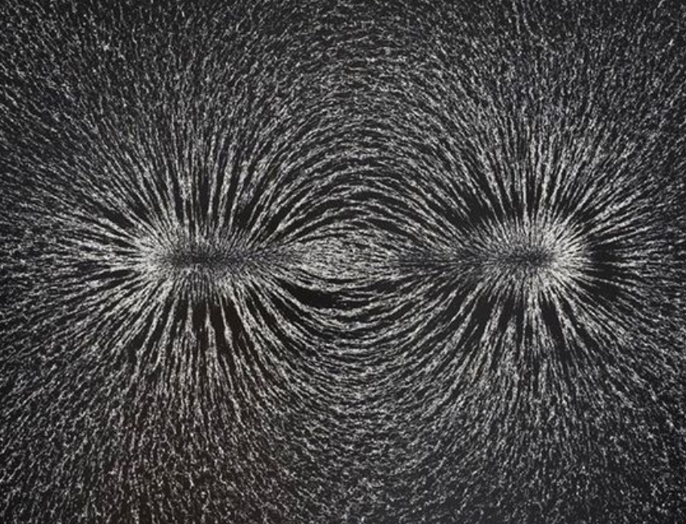

Zone blanche
Documentary radio creation

A notification interrupts a thought. Then another. Zone Blanche begins with this familiar experience of saturation to explore what silently passes through our bodies and spaces: signals, networks, infrastructures and electromagnetic phenomena.
From the body to the city, and then to solar activity, the documentary gradually shifts scales and modes of listening. Moving between narratives, urban drifting, electromagnetic recordings and sound composition, it seeks less to explain the invisible than to make it perceptible.
With the support of ACSR and FACR — Fédération Wallonie-Bruxelles.